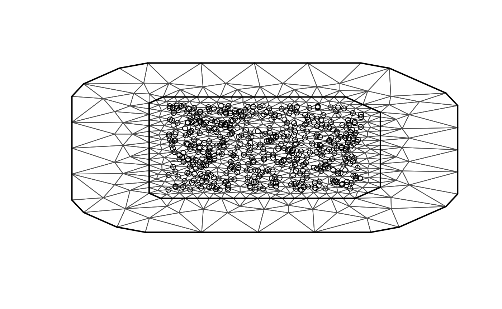

Rational approximation with the rSPDE package
David Bolin, Alexandre B. Simas, Zhen Xiong
2022-09-15
Source:vignettes/rspde_cov.Rmd
rspde_cov.RmdIntroduction
In this vignette we will illustrate how to do statistical inference with the covariance-based rational SPDE approach. The covariance-based rational approximation is related to the operator-based (rational approximation by Bolin and Kirchner 2020)(https://www.tandfonline.com/doi/full/10.1080/10618600.2019.1665537).
The covariance-based rational approximation is an efficient alternative to the operator-based rational approximation when one has SPDE driven by Gaussian white noise. We refer the reader to (Xiong, Simas, and Bolin 2022)(https://arxiv.org/abs/2209.04670) for the theoretical details.
When dealing with fractional SPDE models driven by non-Gaussian white noises, the operator-based rational approximations might be useful. For instance, consider the SPDE: \[L^{\alpha/2}(\tau u) = \widetilde{\mathcal{W}},\] where \(L = -\Delta +\kappa^2 I\) and \(\widetilde{\mathcal{W}}\) is a non-Gaussian white noise. An example in which the operator-based rational approximation is suitable, is when one has the above SPDE with the white noise being the so-called type-G Lévy noises.
We refer the reader to (Wallin and Bolin 2015)(https://onlinelibrary.wiley.com/doi/full/10.1111/sjos.12141), (Bolin 2013)(https://onlinelibrary.wiley.com/doi/abs/10.1111/sjos.12046) and (Asar et al. 2020)(https://rss.onlinelibrary.wiley.com/doi/pdf/10.1111/rssc.12405) for examples of models driven by type-G Lévy noises. We also refer the reader to the ngme package where one can fit such models.
We explore the functions for performing the operator-based rational approximation on the vignette:
For the R-INLA implementation of the rational SPDE approach we refer the reader to the R-INLA implementation of the rational SPDE approach vignette.
Covariance-based rational SPDE approach
Let us first present the basic setup. We want to model the precipitation as a two-dimensional random field \(u\) within a bounded domain, where each location on the domain associates with a random variable which describe the local precipitation.
In the SPDE approach, introduced in (Lindgren, Rue, and Lindström 2011)(https://rss.onlinelibrary.wiley.com/doi/full/10.1111/j.1467-9868.2011.00777.x) we model \(u\) as the solution of the following SPDE: \[L^{\alpha/2}(\tau u) = \mathcal{W},\] where \(L = -\Delta +\kappa^2 I\) and \(\mathcal{W}\) is the standard Gaussian white noise. Here, \(\alpha\), \(\kappa\) and \(\tau\) are three parameters we want to estimate. In the standard SPDE approach, we write, for a general dimension \(d\), \(\alpha = \nu + d/2\) and assume \(\nu\) to be fixed. In the rational SPDE approach we are able to estimate a general smoothness \(\nu\) from the data.
Now let us briefly describe how covariance based rational SPDE approach works in statistical inference.
The central idea is to perform the rational approximation directly on the covariance operator, which is given by \(L^{-\alpha}\), instead of on the solution \(u\).
To this end, we begin by obtaining an approximation of the random field \(u\), which is the solution of the SPDE written above, by using the finite element method (FEM): \[u_h(\mathbf{s}_i)=\sum_{j=1}^{n_h} \hat{u}_j \varphi_j(\mathbf{s}_i),\] where \(\{\hat{u}_j\}_{j = 1}^{n_h}\) are stochastic weights and \(\{\varphi_j(\mathbf{s}_i)\}_{j = 1}^{n_h}\) are fixed basis functions. We then obtain finite element approximation of the operator \(L\), which is given by \(L_h\), and the covariance operator of \(u_h\) is given by \(L_h^{-\alpha}\).
Now, by using the rational approximation on \(L_h\), we can approximate covariance operator \(L_h^{-\alpha}\) as \[L_{h,m}^{-\alpha} = L_h^{-m_\alpha} p(L_h^{-1})q(L_h^{-1})^{-1},\] where \(m_{\alpha} = \lfloor\alpha\rfloor\), \(m\) is the order of rational approximation, \(p(L_h^{-1}) = \sum_{i=0}^m a_i L_h^{m-i}\) and \(q(L_h^{-1}) = \sum_{j=0}^m b_j L_h^{m-i}\), with \(\{a_i\}_{i = 0}^m\) and \(\{b_j\}_{j = 0}^m\) being known coefficients obtained from the rational approximation.
The next step is to obtain the decomposition of \(p(L_h^{-1})q(L_h^{-1})^{-1}\) into partial fractions to get the new representation: \[L_{h,m}^{-\alpha} =L_h^{-m_\alpha} \left(\sum_{i=1}^{m} r_i (L_h-p_i I)^{-1} +k\right).\] Based on the above operator equation, we can write the covariance matrix of the stochastic weights \(\hat{\textbf{u}}\), where \(\hat{\textbf{u}}=[\hat{u}_1,...,\hat{u}_{n_h}]^\top\), as \[\mathbf{\Sigma}_{\hat{\textbf{u}}} = (\textbf{L}^{-1}\textbf{C})^{m_{\alpha}} \sum_{i=1}^{m}r_i(\textbf{L}-p_i\textbf{C})^{-1}+\textbf{K}, \] where \(\textbf{C} = \{C_{ij}\}_{i,j=1}^{n_h}\), \(C_{ij} = (\varphi_i,\varphi_j)_{L_2(\mathcal{D})}\), is the mass matrix, \(\textbf{L} = \kappa^2\textbf{C}+\textbf{G}\), \(\textbf{G} = \{G_{ij}\}_{i,j=1}^{n_h}\), \(G_{ij}=(\nabla\varphi_i,\nabla\varphi_j)_{L_2(\mathcal{D})}\), is the stiffness matrix, and \[\textbf{K}=\left\{ \begin{array}{lcl} k\textbf{C} & & {m_{\alpha}=0}\\ k\textbf{L}^{-1}(\textbf{C}\textbf{L}^{-1})^{m_{\alpha}-1} & & {m_{\alpha}>=1}\\ \end{array} \right. .\]
The above representation shows that we can express \(\hat{\textbf{u}}\) as \[\hat{\textbf{u}}=\sum_{k=1}^{m+1}\textbf{x}_k,\] where \(\textbf{x}_k = (x_{k,1}, \ldots, x_{k,n_h})\), \[\textbf{x}_i \sim N(\textbf{0},\textbf{Q}_i^{-1}),\] and \(\textbf{Q}_i\) is the precision matrix of \(\textbf{x}_i\), which is given by \[\textbf{Q}_i=\left \{ \begin{array}{lcl} (\textbf{L}-p_i\textbf{C})(\textbf{C}^{-1}\textbf{L})^{m_{\alpha}}/r_i, & & {i = 1,...,m}\\ \textbf{K}^{-1}, & & {i = m+1}\\ \end{array}. \right.\]
We, then, replace the Matérn latent field by the latent vector given above, which has precision matrix given by \[\textbf{Q}=\begin{bmatrix}\textbf{Q}_1& &\\&\ddots&\\& &\textbf{Q}_{m+1}\end{bmatrix}.\] Now, assume we observe \[y_i = u_h(\mathbf{s}_i) + \varepsilon_i,\quad i=1,\ldots, N,\] where \(\varepsilon_i\sim N(0,\sigma_\varepsilon^2)\) are iid measurement noise. Then, we have that \[y_i = u_h(\mathbf{s}_i) + \varepsilon_i = \sum_{j=1}^{n_h} \hat{u}_j \varphi_j(\mathbf{s}_i) + \varepsilon_i = \sum_{k=1}^{m+1} \sum_{j=1}^{n_h} x_{k,j} \varphi(\mathbf{s}_i) + \varepsilon_i.\] This can be written in a matrix form as \[\textbf{y} = \overline{\textbf{A}} \textbf{X} + \boldsymbol{\varepsilon},\] where \(\textbf{y} = [y_1,\ldots,y_N]^\top, \textbf{X} = [\textbf{x}_1^\top,\ldots,\textbf{x}_{m+1}^\top]^\top\), \(\boldsymbol{\varepsilon} = [\varepsilon_1,\ldots,\varepsilon_N]^\top\), \[\overline{\textbf{A}}=\begin{bmatrix}\textbf{A}&\cdots&\textbf{A}\end{bmatrix}_{n\times n_h(m+1)},\] and \[\textbf{A}=\begin{bmatrix}\varphi_1(s_1)&\cdots&\varphi_{n_h}(s_1)\\\vdots&\vdots&\vdots\\\varphi_1(s_n)&\cdots&\varphi_{n_h}(s_n)\end{bmatrix}.\] We then arrive at the following hierarchical model: \[\begin{align} \textbf{y}\mid \textbf{X} &\sim N(0,\sigma_\varepsilon\textbf{I})\\ \textbf{X}&\sim N(0,\textbf{Q}^{-1}) \end{align}.\]
With these elements, we can use R-INLA to compute the posterior distribution of the three parameters we want to estimate.
The covariance-based method has a computational advantage when compared to the standard rational approximation: the computational cost of a covariance-based rational approximation of order \(m\) is approximately the same as the standard rational approximation of order \(m/2\).
Constructing the approximation
In this section, we explain how to to use the function matern.operators() with the default argument type, that is, type="covariance", which is constructs the covariance-based rational approximation. We will also illustrate the usage of several methods and functions related to the covariance-based rational approximation. We will use functions to sample from Gaussian fields with stationary Matérn covariance function, compute the log-likelihood function, perform predicitions (i.e., do kringing), etc.
The first step for performing the covariance-based rational SPDE approximation is to define the FEM mesh. For illustration purposes, the rSPDE package contains a simple FEM implementation for models on \(\mathbb{R}\) which we will use first. We will also illustrate how spatial models can be constructed if the FEM implementation of the R-INLA package is used instead. When using the R-INLA package, we also recommend the usage of our R-INLA implementation of the rational SPDE approach. For more details see the R-INLA implementation of the rational SPDE approach vignette.
We begin by loading the rSPDE package:
Assume that we want to define a model on the interval \([0,1]\). We then start by defining a vector with mesh nodes \(s_i\) where the basis functions \(\varphi_i\) are centered.
s <- seq(from = 0, to = 1, length.out = 101)Based on these nodes, we use the built-in function rSPDE.fem1d() to assemble two matrices needed for creating the approximation of a basic Matérn model. These matrices are the mass matrix \(\boldsymbol{\mathrm{C}}\), with elements \(C_{ij} = \int \varphi_j(s) \varphi_i(s) ds\), and the stiffness matrix \(\boldsymbol{\mathrm{G}}\), with elements \(G_{ij} = \int \nabla\varphi_j(s) \cdot \nabla\varphi_i(s) ds\).
fem <- rSPDE.fem1d(s)We can now use matern.operators() to construct a rational SPDE approximation of order \(m=2\) for a Gaussian random field with a Matérn covariance function on the interval. We also refer the reader to the Operator-based rational approximation for a similar comparison made for the operator-based rational approximation.
kappa <- 20
sigma <- 2
nu <- 0.8
op_cov <- matern.operators(
C = fem$C, G = fem$G, nu = nu,
kappa = kappa, sigma = sigma, d = 1, m = 2
)The object op_cov contains the matrices needed for evaluating the distribution of the stochastic weights \(\boldsymbol{\mathrm{u}}\). If we want to evaluate \(u_h(s)\) at some locations \(s_1,\ldots, s_n\), we need to multiply the weights with the basis functions \(\varphi_i(s)\) evaluated at the locations. For this, we can construct the observation matrix \(\boldsymbol{\mathrm{A}}\), with elements \(A_{ij} = \varphi_j(s_i)\), which links the FEM basis functions to the locations. This matrix can be constructed using the function rSPDE.A1d(). However, as observed in the introduction of this vignette, we have decomposed the stochastic weights \(\boldsymbol{\mathrm{u}}\) into a vector of latent variables. Thus, the \(A\) matrix for the covariance-based rational approximation, which we will denote by \(\overline{A}\), is actually given by the \(m+1\)-fold horizontal concatenation of these \(A\) matrices, where \(m\) is the order of the rational approximation.
To compute the precision matrix from the covariance-based rational approximation one can use the precision() method on the CBrSPDEobj object (the object returned by the matern.operators() function with the default type, which is type="covariance"):
Q <- precision(op_cov)To evaluate the accuracy of the approximation, let us compute the covariance function between the process at \(s=0.5\) and all other locations in s and compare with the true Matérn covariance function. The covariances can be calculated as \[
\overline{\boldsymbol{\mathrm{A}}} \boldsymbol{\mathrm{Q}}^{-1}\overline{\boldsymbol{\mathrm{v}}}.
\] Here, \(\boldsymbol{\mathrm{Q}}\) is the precision matrix obtained from the covariance-based rational approximation, \(\boldsymbol{\mathrm{A}}\) is an identity matrix since we are evaluating the approximation in the nodes of the FEM mesh, \(\overline{\boldsymbol{\mathrm{v}}}\) is the \((m+1)\)-fold vertical concatenation of the vector \(\boldsymbol{\mathrm{v}}\), where \(\boldsymbol{\mathrm{v}}\) is a vector with all basis functions evaluated in \(s=0.5\).
v <- t(rSPDE.A1d(s, 0.5))
v_bar <- kronecker(matrix(1, nrow = 3), v)
A <- Diagonal(101)
A_bar <- kronecker(matrix(1, ncol = 3), A)
c_cov.approx <- (A_bar) %*% solve(Q, v_bar)Let us now compute the true Matérn covariance function on the interval \((0,1)\), which is the folded Matérn, see Theorem 1 in An explicit link between Gaussian fields and Gaussian Markov random fields: the stochastic partial differential equation approach for further details.
c.true <- folded.matern.covariance.1d(rep(0.5, length(s)), abs(s), kappa, nu, sigma)The covariance function and the error compared with the Matérn covariance are shown in the following figure.
To improve the approximation we can increase the degree of the polynomials, by increasing \(m\), and/or increase the number of basis functions used for the FEM approximation. Let us, for example, compute the approximation with \(m=4\) using the same mesh, as well as the approximation when we increase the number of basis functions and use \(m=2\) and \(m=4\).
op_cov2 <- matern.operators(
kappa = kappa, sigma = sigma, nu = nu,
G = fem$G, C = fem$C, d = 1, m = 4
)
Q2 <- precision(op_cov2)
v_bar2 <- kronecker(matrix(1, nrow = 5), v)
A_bar2 <- kronecker(matrix(1, ncol = 5), A)
c_cov.approx2 <- (A_bar2) %*% solve(Q2, v_bar2)
s2 <- seq(from = 0, to = 1, length.out = 501)
fem2 <- rSPDE.fem1d(s2)
op_cov <- matern.operators(
kappa = kappa, sigma = sigma, nu = nu,
G = fem2$G, C = fem2$C, d = 1, m = 2
)
Q3 <- precision(op_cov)
A2 <- rSPDE.A1d(s2, s)
v2 <- t(rSPDE.A1d(s2, 0.5))
v2_bar <- kronecker(matrix(1, nrow = 3), v2)
A2_bar <- kronecker(matrix(1, ncol = 3), A2)
c_cov.approx3 <- (A2_bar) %*% solve(Q3, v2_bar)
op_cov <- matern.operators(
kappa = kappa, sigma = sigma, nu = nu,
G = fem2$G, C = fem2$C, d = 1, m = 4
)
Q4 <- precision(op_cov)
v2_bar2 <- kronecker(matrix(1, nrow = 5), v2)
A2_bar2 <- kronecker(matrix(1, ncol = 5), A2)
c_cov.approx4 <- (A2_bar2) %*% solve(Q4, v2_bar2)The resulting errors are shown in the following figure.
Since the error induced by the rational approximation decreases exponentially in \(m\), there is in general rarely a need for an approximation with a large value of \(m\). This is good because the size of \(\boldsymbol{\mathrm{Q}}\) increases with \(m\), which makes the approximation more computationally costly to use. To illustrate this, let us compute the norm of the approximation error for different \(m\).
errors <- rep(0, 4)
for (i in 1:4) {
op_cov <- matern.operators(
kappa = kappa, sigma = sigma, nu = nu,
G = fem2$G, C = fem2$C, d = 1, m = i
)
Q <- precision(op_cov)
v_bar <- kronecker(matrix(1, nrow = i + 1), v2)
A_bar <- kronecker(matrix(1, ncol = i + 1), A2)
c_cov.approx <- (A_bar) %*% solve(Q, v_bar)
errors[i] <- norm(c.true - c_cov.approx)
}
print(errors)## [1] 0.977500618 0.086659188 0.017335545 0.008432137We see that the error decreases very fast when we increase \(m\) from \(1\) to \(4\), without any numerical instability. This is an advantage of the covariance-based rational approximation when compared to the operator-based rational approximation. See Operator-based rational approximation for details on the numerical instability of the operator-based rational approximation.
The main reason for the numerical stability of the covariance-based method is that its clever decomposition of the latent field into a vector of random fields (see the introduction for further details) remove the need of higher order finite element matrices to have higher order rational approximations.
Using the approximation
When we use the function matern.operators(), we can simulate from the model using the simulate() method. To such an end we simply apply the simulate() method to the object returned by the matern.operators() function:
u <- simulate(op_cov)If we want replicates, we simply set the argument nsim to the desired number of replicates. For instance, to generate two replicates of the model, we simply do:
u.rep <- simulate(op_cov, nsim = 2)Fitting a model
There is also built-in support for computing loglikelihood function and performing kriging prediction. To illustrate this, we use the simulation to create some noisy observations of the process. For this, we first construct the observation matrix linking the FEM basis functions to the locations where we want to simulate. We first randomly generate some observation locations and then construct the matrix.
set.seed(1)
s <- seq(from = 0, to = 1, length.out = 501)
n.obs <- 200
obs.loc <- runif(n.obs)
fem <- rSPDE.fem1d(s)
A <- rSPDE.A1d(s, obs.loc)We now generate the observations as \(Y_i = u(s_i) + \varepsilon_i\), where \(\varepsilon_i \sim N(0,\sigma_e^2)\) is Gaussian measurement noise. We will assume that the latent process has a Matérn covariance with \(\kappa=20, \sigma=2\) and \(\nu=0.8\):
kappa <- 20
sigma <- 2
nu <- 0.8
op_cov <- matern.operators(
C = fem$C, G = fem$G, nu = nu,
kappa = kappa, sigma = sigma, d = 1, m = 2
)
u <- simulate(op_cov)
sigma.e <- 0.3
Y <- as.vector(A %*% u + sigma.e * rnorm(n.obs))Let us now fit the model. To this end we first must compute the loglikelihood function as function of the parameters we want to estimate. We define the loglikelihood function parametrized using the logarithm of each parameter to avoid constrained optimization.
mlik_cov <- rSPDE.construct.matern.loglike(op_cov, Y=Y, A=A)We will now get suitable initial values for the optimization using the get.inital.values.rSPDE(). We then add an initial guess for sigma.e.
theta0 <- c(
get.inital.values.rSPDE(mesh.range = 1, dim = 1),
log(0.1 * sqrt(var(as.vector(Y))))
)
start_time <- Sys.time()
theta <- optim(theta0, mlik_cov,
method = "L-BFGS-B"
)
end_time <- Sys.time()
time_optim <- end_time - start_time
print(data.frame(
sigma = c(sigma, exp(theta$par[1])), kappa = c(kappa, exp(theta$par[2])),
nu = c(nu, exp(theta$par[3])), sigma.e = c(sigma.e, exp(theta$par[4])),
row.names = c("Truth", "Estimates")
))## sigma kappa nu sigma.e
## Truth 2.000000 20.00000 0.8000000 0.3000000
## Estimates 2.476834 19.09341 0.8468107 0.3323609
# Total time
print(time_optim)## Time difference of 5.826447 secsWe can also speed up the optimization by using the optimParallel() function from the optimParallel package. To such an end, we simply replace the optim() function by optimParallel() and set the number of cores we want to use:
library(optimParallel)
# Preparing the parallel
# Checking if we have a limit to the number of cores
chk <- Sys.getenv("_R_CHECK_LIMIT_CORES_", "")
if (nzchar(chk) && chk == "TRUE") {
n_cores <- 2L
} else {
n_cores <- parallel::detectCores() - 1
}
cl <- makeCluster(n_cores)
setDefaultCluster(cl = cl)
# Exporting the needed objects to the parallel cores
# This step is not necessary for the regular optim
parallel::clusterExport(cl, "op_cov")
parallel::clusterExport(cl, "Y")
parallel::clusterExport(cl, "A")
start_time <- Sys.time()
theta_parallel <- optimParallel(theta0, mlik_cov)
end_time <- Sys.time()
time_optim <- end_time - start_time
print(data.frame(
sigma = c(sigma, exp(theta_parallel$par[1])),
kappa = c(kappa, exp(theta_parallel$par[2])),
nu = c(nu, exp(theta_parallel$par[3])),
sigma.e = c(sigma.e, exp(theta_parallel$par[4])),
row.names = c("Truth", "Estimates")
))## sigma kappa nu sigma.e
## Truth 2.000000 20.00000 0.8000000 0.3000000
## Estimates 2.476834 19.09341 0.8468107 0.3323609
# Total time
print(time_optim)## Time difference of 5.016766 secsKringing
Finally, we compute the kriging prediction of the process \(u\) at the locations in s based on these observations. To specify which locations that should be predicted, the argument Aprd is used. This argument should be an observation matrix that links the mesh locations to the prediction locations.
A.krig <- rSPDE.A1d(s, s)Let us update the CBrSPDEobj object (returned by the matern.operators() function) with the fitted parameters:
sigma_est <- exp(theta$par[1])
kappa_est <- exp(theta$par[2])
nu_est <- exp(theta$par[3])
op_cov <- update(op_cov,
user_kappa = kappa_est,
user_sigma = sigma_est,
user_nu = nu_est
)We can now perform kringing with the predict() method:
u.krig <- predict(op_cov, A = A, Aprd = A.krig, Y = Y, sigma.e = sigma.e)The simulated process, the observed data, and the kriging prediction are shown in the following figure.

Fitting a model with replicates
Let us illustrate how to simulate a dataset with replicates. Then, we will show how to fit parameters on such a dataset.
Recall that to simulate a latent model with replicates, all we do is set the nsim argument to the number of replicates.
Let us simulate the dataset. We will use the same CBrSPDEobj object (returned from the matern.operators() function) from the previous example, namely op_cov.
Now, let us generate the observed values \(Y\):
Notice that \(Y\) is a matrix with 20 columns, each column containing a replicate. Now, the remaining of the code is identical to the previous case. The rSPDE.matern.loglike() function automatically identifies the replicates from the fact that \(Y\) is a matrix with more than one column.
theta0 <- c(
get.inital.values.rSPDE(mesh.range = 1, dim = 1),
log(0.1 * sqrt(var(as.vector(Y))))
)
mlik_cov <- rSPDE.construct.matern.loglike(op_cov, Y=Y.rep, A=A)
# Exporting the needed objects to the parallel cores
# This step is not necessary for the regular optim
parallel::clusterExport(cl, "op_cov")
parallel::clusterExport(cl, "Y.rep")
parallel::clusterExport(cl, "A")
start_time <- Sys.time()
theta <- optimParallel(theta0, mlik_cov,
method = "L-BFGS-B"
)
end_time <- Sys.time()
time_optim <- end_time - start_time
print(data.frame(
sigma = c(sigma, exp(theta$par[1])), kappa = c(kappa, exp(theta$par[2])),
nu = c(nu, exp(theta$par[3])), sigma.e = c(sigma.e, exp(theta$par[4])),
row.names = c("Truth", "Estimates")
))## sigma kappa nu sigma.e
## Truth 2.000000 20.00000 0.800000 0.3000000
## Estimates 2.379152 18.40182 0.810289 0.2931603
# Total time
print(time_optim)## Time difference of 3.05596 secsSpatial data and parameter estimation
The functions used in the previous examples also work for spatial models. We then need to construct a mesh over the domain of interest and then compute the matrices needed to define the operator. These tasks can be performed, for example, using the R-INLA package. Let us start by defining a mesh over \([0,1]\times [0, 1]\) and compute the mass and stiffness matrices for that mesh.
It is important to mention that when using the R-INLA package we recommend the usage of the R-INLA implementation of the rational SPDE approach.
Let us then consider a simple Gaussian linear model with 30 independent replicates of a latent spatial field \(u(\mathbf{s})\), observed at the same \(m\) locations, \(\{\mathbf{s}_1 , \ldots , \mathbf{s}_m \}\), for each replicate. For each \(i = 1,\ldots,m,\) we have
\[\begin{align} y_i &= u_1(\mathbf{s}_i)+\varepsilon_i,\\ \vdots &= \vdots\\ y_{i+29m} &= u_{30}(\mathbf{s}_i) + \varepsilon_{i+29m}, \end{align}\]
where \(\varepsilon_1,\ldots,\varepsilon_{30m}\) are iid normally distributed with mean 0 and standard deviation 0.1.
Let us then create the FEM mesh:
library(INLA)
n_loc <- 500
loc_2d_mesh <- matrix(runif(n_loc * 2), n_loc, 2)
mesh_2d <- inla.mesh.2d(
loc = loc_2d_mesh,
cutoff = 0.05,
offset = c(0.1, 0.4),
max.edge = c(0.05, 0.5)
)
plot(mesh_2d, main = "")
points(loc_2d_mesh[, 1], loc_2d_mesh[, 2])
We can now use this mesh to define a rational SPDE approximation of order \(m=2\) for a Matérn model in the same fashion as we did above in the one-dimensional case. We will now simulate a latent process with standard deviation \(\sigma=1\) and range \(0.1\). We will use \(\nu=0.5\) so that the model has an exponential covariance function. To this end we create a model object with the matern.operators() function:
nu <- 0.5
sigma <- 1
range <- 0.1
kappa <- sqrt(8 * nu) / range
d <- 2
op_cov_2d <- matern.operators(
mesh = mesh_2d,
nu = nu,
kappa = kappa,
sigma = sigma,
m = 2
)Now let us simulate some noisy data that we will use to estimate the parameters of the model. To construct the observation matrix, we use the R-INLA function inla.spde.make.A(). Recall that we will simulate the data with 30 replicates.
n.rep <- 30
u <- simulate(op_cov_2d, nsim = n.rep)
A <- inla.spde.make.A(
mesh = mesh_2d,
loc = loc_2d_mesh
)
sigma.e <- 0.1
Y <- A %*% u + matrix(rnorm(n_loc * n.rep), ncol = n.rep) * sigma.eThe first replicate of the simulated random field as well as the observation locations are shown in the following figure.

We will now use the function rSPDE.matern.loglike() to define the likelihood. This function is object-based, in the sense that it obtains several of the quantities it needs from the rSPDE model object. In our case, for this example, the object op_cov_2d.
To simplify parameter estimation, we create an objective function to minimize which is the negative log-likelihood, parametrized using the logarithm of each parameter to avoid constrained optimization.
mlik_2d <- rSPDE.construct.matern.loglike(op_cov_2d, Y=Y, A=A)We can now estimate the parameter using optimParallel():
theta0_2d <- c(
get.inital.values.rSPDE(mesh = mesh_2d),
log(0.1 * sqrt(var(as.vector(Y))))
)
# Exporting the needed objects to the parallel cores
# This step is not necessary for the regular optim
parallel::clusterExport(cl, "op_cov_2d")
parallel::clusterExport(cl, "Y")
parallel::clusterExport(cl, "A")
start_time <- Sys.time()
pars <- optimParallel(theta0_2d, mlik_2d)
end_time <- Sys.time()
total_time <- end_time - start_time
results <- data.frame(
sigma = c(sigma, exp(pars$par[1])),
kappa = c(kappa, exp(pars$par[2])),
nu = c(nu, exp(pars$par[3])),
sigma.e = c(sigma.e, exp(pars$par[4])),
row.names = c("True", "Estimate")
)
print(results)## sigma kappa nu sigma.e
## True 1.000000 20.00000 0.5000000 0.1000000
## Estimate 1.032911 19.18672 0.4259368 0.1004302
# Total time
print(total_time)## Time difference of 11.49757 secsChanging the type and the order of the rational approximation
We have three rational approximations available. The BRASIL algorithm (Hofreither 2021)(https://doi.org/10.1007/s11075-020-01042-0), and two “versions” of the Clenshaw-Lord Chebyshev-Pade algorithm, one with lower bound zero and another with the lower bound given in (Xiong, Simas, and Bolin 2022)(https://arxiv.org/abs/2209.04670).
The type of rational approximation can be chosen by setting the type_rational_approximation argument in the matern.operators function. The BRASIL algorithm corresponds to the choice brasil, the Clenshaw-Lord Chebyshev pade with zero lower bound and non-zero lower bounds are given, respectively, by the choices chebfun and chebfunLB.
For instance, we can create an rSPDE object with a chebfunLB rational approximation by
nu <- 0.5
sigma <- 1
range <- 0.1
kappa <- sqrt(8 * nu) / range
d <- 2
op_cov_2d_type <- matern.operators(
mesh = mesh_2d,
nu = nu,
kappa = kappa,
sigma = sigma,
m = 2,
type_rational_approximation = "chebfunLB"
)We can check the order of the rational approximation with the rational.order() function and assign a new order with the rational.order<-() function:
rational.order(op_cov_2d_type)## [1] 2
rational.order(op_cov_2d_type) <- 3Let us fit a model using the data from the previous example:
mlik_2d_type <- rSPDE.construct.matern.loglike(op_cov_2d_type, Y=Y, A=A)We can now estimate the parameter using optimParallel():
# Exporting the needed objects to the parallel cores
# This step is not necessary for the regular optim
parallel::clusterExport(cl, "op_cov_2d_type")
start_time <- Sys.time()
pars <- optimParallel(theta0_2d, mlik_2d_type)
end_time <- Sys.time()
total_time <- end_time - start_time
results <- data.frame(
sigma = c(sigma, exp(pars$par[1])),
kappa = c(kappa, exp(pars$par[2])),
nu = c(nu, exp(pars$par[3])),
sigma.e = c(sigma.e, exp(pars$par[4])),
row.names = c("True", "Estimate")
)
print(results)## sigma kappa nu sigma.e
## True 1.000000 20.00000 0.5000000 0.1000000
## Estimate 1.050229 18.76927 0.3978261 0.1004293
# Total time
print(total_time)## Time difference of 10.77812 secsFinally, we can check the type of rational approximation with the rational.type() function and assign a new type by using the rational.type<-() function:
rational.type(op_cov_2d_type)## [1] "chebfunLB"
rational.type(op_cov_2d_type) <- "brasil"Let us now fit this model, with the data from the previous example, with brasil rational approximation:
mlik_2d_type <- rSPDE.construct.matern.loglike(op_cov_2d_type, Y=Y, A=A)We can now estimate the parameter using optimParallel():
# Exporting the needed objects to the parallel cores
# This step is not necessary for the regular optim
parallel::clusterExport(cl, "op_cov_2d_type")
start_time <- Sys.time()
pars <- optimParallel(theta0_2d, mlik_2d_type)
end_time <- Sys.time()
total_time <- end_time - start_time
results <- data.frame(
sigma = c(sigma, exp(pars$par[1])),
kappa = c(kappa, exp(pars$par[2])),
nu = c(nu, exp(pars$par[3])),
sigma.e = c(sigma.e, exp(pars$par[4])),
row.names = c("True", "Estimate")
)
print(results)## sigma kappa nu sigma.e
## True 1.000000 20.00000 0.5000000 0.1000000
## Estimate 1.042359 19.04997 0.4124101 0.1004302
# Total time
print(total_time)## Time difference of 17.14095 secs